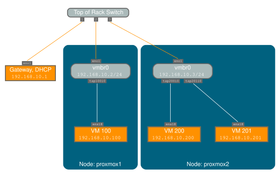
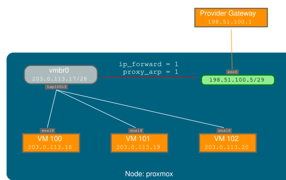
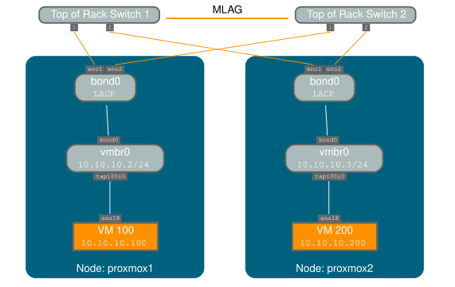

Proxmox VE is using the Linux network stack. This provides a lot of flexibility on
how to set up the network on the Proxmox VE nodes. The configuration can be done
either via the GUI, or by manually editing the file /etc/network/interfaces,
which contains the whole network configuration. The interfaces(5) manual
page contains the complete format description. All Proxmox VE tools try hard to keep
direct user modifications, but using the GUI is still preferable, because it
protects you from errors.
A Linux bridge interface (commonly called vmbrX) is needed to connect guests to the underlying physical network. It can be thought of as a virtual switch which the guests and physical interfaces are connected to. This section provides some examples on how the network can be set up to accommodate different use cases like redundancy with a bond, vlans or routed and NAT setups.
The Software Defined Network is an option for more complex virtual networks in Proxmox VE clusters.
It’s discouraged to use the traditional Debian tools ifup and ifdown
if unsure, as they have some pitfalls like interrupting all guest traffic on
ifdown vmbrX but not reconnecting those guest again when doing ifup on the
same bridge later.
Proxmox VE does not write changes directly to /etc/network/interfaces. Instead, we
write into a temporary file called /etc/network/interfaces.new, this way you
can do many related changes at once. This also allows to ensure your changes
are correct before applying, as a wrong network configuration may render a node
inaccessible.
With the recommended ifupdown2 package (default for new installations since
Proxmox VE 7.0), it is possible to apply network configuration changes without a
reboot. If you change the network configuration via the GUI, you can click the
Apply Configuration button. This will move changes from the staging
interfaces.new file to /etc/network/interfaces and apply them live.
If you made manual changes directly to the /etc/network/interfaces file, you
can apply them by running ifreload -a
If you installed Proxmox VE on top of Debian, or upgraded to Proxmox VE 7.0 from an
older Proxmox VE installation, make sure ifupdown2 is installed: apt install
ifupdown2
We currently use the following naming conventions for device names:
en*, systemd network interface names. This naming scheme is
used for new Proxmox VE installations since version 5.0.
eth[N], where 0 ≤ N (eth0, eth1, …) This naming
scheme is used for Proxmox VE hosts which were installed before the 5.0
release. When upgrading to 5.0, the names are kept as-is.
vmbr[N], where 0 ≤ N ≤ 4094 (vmbr0 - vmbr4094),
but you can use any alphanumeric string that starts with a character and is at
most 10 characters long.
bond[N], where 0 ≤ N (bond0, bond1, …)
eno1.50, bond1.30)
This makes it easier to debug networks problems, because the device name implies the device type.
Systemd defines a versioned naming scheme for network device names. The
scheme uses the two-character prefix en for Ethernet network devices. The
next characters depends on the device driver, device location and other
attributes. Some possible patterns are:
o<index>[n<phys_port_name>|d<dev_port>] — devices on board
s<slot>[f<function>][n<phys_port_name>|d<dev_port>] — devices by hotplug id
[P<domain>]p<bus>s<slot>[f<function>][n<phys_port_name>|d<dev_port>] —
devices by bus id
x<MAC> — devices by MAC address
Some examples for the most common patterns are:
eno1 — is the first on-board NIC
enp3s0f1 — is function 1 of the NIC on PCI bus 3, slot 0
For a full list of possible device name patterns, see the systemd.net-naming-scheme(7) manpage.
A new version of systemd may define a new version of the network device naming scheme, which it then uses by default. Consequently, updating to a newer systemd version, for example during a major Proxmox VE upgrade, can change the names of network devices and require adjusting the network configuration. To avoid name changes due to a new version of the naming scheme, you can manually pin a particular naming scheme version (see below).
However, even with a pinned naming scheme version, network device names can still change due to kernel or driver updates. In order to avoid name changes for a particular network device altogether, you can manually override its name using a link file (see below).
For more information on network interface names, see Predictable Network Interface Names.
You can pin a specific version of the naming scheme for network devices by
adding the net.naming-scheme=<version> parameter to the
kernel command line. For a list of naming
scheme versions, see the
systemd.net-naming-scheme(7) manpage.
For example, to pin the version v252, which is the latest naming scheme
version for a fresh Proxmox VE 8.0 installation, add the following kernel
command-line parameter:
net.naming-scheme=v252
See also this section on editing the kernel command line. You need to reboot for the changes to take effect.
Proxmox VE provides a tool for automatically generating .link files for overriding the name of network devices. It also automatically replaces the occurences of the old interface name in the following files:
/etc/network/interfaces
/etc/pve/nodes/<nodename>/host.fw
/etc/pve/sdn/controllers.cfg
/etc/pve/sdn/fabrics.cfg
Since the generated mapping is local to the node it is generated on,
interface names contained in the Firewall Datacenter configuration
(/etc/pve/firewall/cluster.fw) are not automatically updated.
The generated link files are stored in /usr/local/lib/systemd/network. For the
configuration files a new file will be generated in the same place with a .new
suffix. This way you can inspect the changes made to the configuration by
using diff (or another diff viewer of your choice):
diff -y /etc/network/interfaces /etc/network/interfaces.new
If you see any problematic changes or want to revert the changes made by the
pinning tool before rebooting, simply delete all .new files and the
respective link files from /usr/local/lib/systemd/network.
The following command will generate a .link file for all physical network
interfaces that do not yet have a .link file and update selected Proxmox VE
configuration files (see above). The generated names will use the default prefix
nic, so the resulting interface names will be nic1, nic2, …
pve-network-interface-pinning generate
You can override the default prefix with the --prefix flag:
pve-network-interface-pinning generate --prefix myprefix
It is also possible to pin only a specific interface:
pve-network-interface-pinning generate --interface enp1s0
When pinning a specific interface, you can specify the exact name that the interface should be pinned to:
pve-network-interface-pinning generate --interface enp1s0 --target-name if42
In order to apply the changes made by pve-network-interface-pinning to the
network configuration, the node needs to be rebooted.
You can manually assign a name to a particular network device using a custom systemd.link file. This overrides the name that would be assigned according to the latest network device naming scheme. This way, you can avoid naming changes due to kernel updates, driver updates or newer versions of the naming scheme.
Custom link files should be placed in /etc/systemd/network/ and named
<n>-<id>.link, where n is a priority smaller than 99 and id is some
identifier. A link file has two sections: [Match] determines which interfaces
the file will apply to; [Link] determines how these interfaces should be
configured, including their naming.
To assign a name to a particular network device, you need a way to uniquely and
permanently identify that device in the [Match] section. One possibility is
to match the device’s MAC address using the MACAddress option, as it is
unlikely to change.
The [Match] section should also contain a Type option to make sure it only
matches the expected physical interface, and not bridge/bond/VLAN interfaces
with the same MAC address. In most setups, Type should be set to ether to
match only Ethernet devices, but some setups may require other choices. See the
systemd.link(5)
manpage for more details.
Then, you can assign a name using the Name option in the [Link] section.
Link files are copied to the initramfs, so it is recommended to refresh the
initramfs after adding, modifying, or removing a link file:
# update-initramfs -u -k all
For example, to assign the name enwan0 to the Ethernet device with MAC
address aa:bb:cc:dd:ee:ff, create a file
/etc/systemd/network/10-enwan0.link with the following contents:
[Match] MACAddress=aa:bb:cc:dd:ee:ff Type=ether [Link] Name=enwan0
Do not forget to adjust /etc/network/interfaces to use the new name, and
refresh your initramfs as described above. You need to reboot the node for
the change to take effect.
It is recommended to assign a name starting with en or eth so that
Proxmox VE recognizes the interface as a physical network device which can then be
configured via the GUI. Also, you should ensure that the name will not clash
with other interface names in the future. One possibility is to assign a name
that does not match any name pattern that systemd uses for network interfaces
(see above), such as enwan0 in the
example above.
For more information on link files, see the systemd.link(5) manpage.
Depending on your current network organization and your resources you can choose either a bridged, routed, or masquerading networking setup.
The Bridged model makes the most sense in this case, and this is also the default mode on new Proxmox VE installations. Each of your Guest system will have a virtual interface attached to the Proxmox VE bridge. This is similar in effect to having the Guest network card directly connected to a new switch on your LAN, the Proxmox VE host playing the role of the switch.
For this setup, you can use either a Bridged or Routed model, depending on what your provider allows.
In that case the only way to get outgoing network accesses for your guest systems is to use Masquerading. For incoming network access to your guests, you will need to configure Port Forwarding.
For further flexibility, you can configure VLANs (IEEE 802.1q) and network bonding, also known as "link aggregation". That way it is possible to build complex and flexible virtual networks.

Bridges are like physical network switches implemented in software. All virtual guests can share a single bridge, or you can create multiple bridges to separate network domains. Each host can have up to 4094 bridges.
The installation program creates a single bridge named vmbr0, which
is connected to the first Ethernet card. The corresponding
configuration in /etc/network/interfaces might look like this:
auto lo
iface lo inet loopback
iface eno1 inet manual
auto vmbr0
iface vmbr0 inet static
address 192.168.10.2/24
gateway 192.168.10.1
bridge-ports eno1
bridge-stp off
bridge-fd 0Virtual machines behave as if they were directly connected to the physical network. The network, in turn, sees each virtual machine as having its own MAC, even though there is only one network cable connecting all of these VMs to the network.
Most hosting providers do not support the above setup. For security reasons, they disable networking as soon as they detect multiple MAC addresses on a single interface.
Some providers allow you to register additional MACs through their management interface. This avoids the problem, but can be clumsy to configure because you need to register a MAC for each of your VMs.
You can avoid the problem by “routing” all traffic via a single interface. This makes sure that all network packets use the same MAC address.

A common scenario is that you have a public IP (assume 198.51.100.5
for this example), and an additional IP block for your VMs
(203.0.113.16/28). We recommend the following setup for such
situations:
auto lo
iface lo inet loopback
auto eno0
iface eno0 inet static
address 198.51.100.5/29
gateway 198.51.100.1
post-up echo 1 > /proc/sys/net/ipv4/ip_forward
post-up echo 1 > /proc/sys/net/ipv4/conf/eno0/proxy_arp
auto vmbr0
iface vmbr0 inet static
address 203.0.113.17/28
bridge-ports none
bridge-stp off
bridge-fd 0Masquerading allows guests having only a private IP address to access the
network by using the host IP address for outgoing traffic. Each outgoing
packet is rewritten by iptables to appear as originating from the host,
and responses are rewritten accordingly to be routed to the original sender.
auto lo
iface lo inet loopback
auto eno1
#real IP address
iface eno1 inet static
address 198.51.100.5/24
gateway 198.51.100.1
auto vmbr0
#private sub network
iface vmbr0 inet static
address 10.10.10.1/24
bridge-ports none
bridge-stp off
bridge-fd 0
post-up echo 1 > /proc/sys/net/ipv4/ip_forward
post-up iptables -t nat -A POSTROUTING -s '10.10.10.0/24' -o eno1 -j MASQUERADE
post-down iptables -t nat -D POSTROUTING -s '10.10.10.0/24' -o eno1 -j MASQUERADEIn some masquerade setups with firewall enabled, conntrack zones might be
needed for outgoing connections. Otherwise the firewall could block outgoing
connections since they will prefer the POSTROUTING of the VM bridge (and not
MASQUERADE).
Adding these lines in the /etc/network/interfaces can fix this problem:
post-up iptables -t raw -I PREROUTING -i fwbr+ -j CT --zone 1 post-down iptables -t raw -D PREROUTING -i fwbr+ -j CT --zone 1
For more information about this, refer to the following links:
Patch on netdev-list introducing conntrack zones
Blog post with a good explanation by using TRACE in the raw table
Bonding (also called NIC teaming or Link Aggregation) is a technique for binding multiple NIC’s to a single network device. It is possible to achieve different goals, like make the network fault-tolerant, increase the performance or both together.
High-speed hardware like Fibre Channel and the associated switching hardware can be quite expensive. By doing link aggregation, two NICs can appear as one logical interface, resulting in double speed. This is a native Linux kernel feature that is supported by most switches. If your nodes have multiple Ethernet ports, you can distribute your points of failure by running network cables to different switches and the bonded connection will failover to one cable or the other in case of network trouble.
Aggregated links can improve live-migration delays and improve the speed of replication of data between Proxmox VE Cluster nodes.
There are 7 modes for bonding:
If your switch supports the LACP (IEEE 802.3ad) protocol, then we recommend using the corresponding bonding mode (802.3ad). Otherwise you should generally use the active-backup mode.
For the cluster network (Corosync) we recommend configuring it with multiple networks. Corosync does not need a bond for network redundancy as it can switch between networks by itself, if one becomes unusable. Some bond modes are known to be problematic for Corosync, see Corosync over Bonds.
The following bond configuration can be used as distributed/shared storage network. The benefit would be that you get more speed and the network will be fault-tolerant.
Example: Use bond with fixed IP address.
auto lo
iface lo inet loopback
iface eno1 inet manual
iface eno2 inet manual
iface eno3 inet manual
auto bond0
iface bond0 inet static
bond-slaves eno1 eno2
address 192.168.1.2/24
bond-miimon 100
bond-mode 802.3ad
bond-xmit-hash-policy layer2+3
auto vmbr0
iface vmbr0 inet static
address 10.10.10.2/24
gateway 10.10.10.1
bridge-ports eno3
bridge-stp off
bridge-fd 0

Another possibility is to use the bond directly as the bridge port. This can be used to make the guest network fault-tolerant.
Example: Use a bond as the bridge port.
auto lo
iface lo inet loopback
iface eno1 inet manual
iface eno2 inet manual
auto bond0
iface bond0 inet manual
bond-slaves eno1 eno2
bond-miimon 100
bond-mode 802.3ad
bond-xmit-hash-policy layer2+3
auto vmbr0
iface vmbr0 inet static
address 10.10.10.2/24
gateway 10.10.10.1
bridge-ports bond0
bridge-stp off
bridge-fd 0
A virtual LAN (VLAN) is a broadcast domain that is partitioned and isolated in the network at layer two. So it is possible to have multiple networks (4096) in a physical network, each independent of the other ones.
Each VLAN network is identified by a number often called tag. Network packages are then tagged to identify which virtual network they belong to.
Proxmox VE supports this setup out of the box. You can specify the VLAN tag when you create a VM. The VLAN tag is part of the guest network configuration. The networking layer supports different modes to implement VLANs, depending on the bridge configuration:
To allow host communication with an isolated network. It is possible to apply VLAN tags to any network device (NIC, Bond, Bridge). In general, you should configure the VLAN on the interface with the least abstraction layers between itself and the physical NIC.
For example, in a default configuration where you want to place the host management address on a separate VLAN.
Example: Use VLAN 5 for the Proxmox VE management IP with traditional Linux bridge.
auto lo
iface lo inet loopback
iface eno1 inet manual
iface eno1.5 inet manual
auto vmbr0v5
iface vmbr0v5 inet static
address 10.10.10.2/24
gateway 10.10.10.1
bridge-ports eno1.5
bridge-stp off
bridge-fd 0
auto vmbr0
iface vmbr0 inet manual
bridge-ports eno1
bridge-stp off
bridge-fd 0
Example: Use VLAN 5 for the Proxmox VE management IP with VLAN aware Linux bridge.
auto lo
iface lo inet loopback
iface eno1 inet manual
auto vmbr0.5
iface vmbr0.5 inet static
address 10.10.10.2/24
gateway 10.10.10.1
auto vmbr0
iface vmbr0 inet manual
bridge-ports eno1
bridge-stp off
bridge-fd 0
bridge-vlan-aware yes
bridge-vids 2-4094
The next example is the same setup but a bond is used to make this network fail-safe.
Example: Use VLAN 5 with bond0 for the Proxmox VE management IP with traditional Linux bridge.
auto lo
iface lo inet loopback
iface eno1 inet manual
iface eno2 inet manual
auto bond0
iface bond0 inet manual
bond-slaves eno1 eno2
bond-miimon 100
bond-mode 802.3ad
bond-xmit-hash-policy layer2+3
iface bond0.5 inet manual
auto vmbr0v5
iface vmbr0v5 inet static
address 10.10.10.2/24
gateway 10.10.10.1
bridge-ports bond0.5
bridge-stp off
bridge-fd 0
auto vmbr0
iface vmbr0 inet manual
bridge-ports bond0
bridge-stp off
bridge-fd 0
Proxmox VE works correctly in all environments, irrespective of whether IPv6 is deployed or not. We recommend leaving all settings at the provided defaults.
Should you still need to disable support for IPv6 on your node, do so by
creating an appropriate sysctl.conf (5) snippet file and setting the proper
sysctls,
for example adding /etc/sysctl.d/disable-ipv6.conf with content:
net.ipv6.conf.all.disable_ipv6 = 1 net.ipv6.conf.default.disable_ipv6 = 1
This method is preferred to disabling the loading of the IPv6 module on the kernel commandline.
By default, MAC learning is enabled on a bridge to ensure a smooth experience with virtual guests and their networks.
But in some environments this can be undesired. Since Proxmox VE 7.3 you can disable MAC learning on the bridge by setting the ‘bridge-disable-mac-learning 1` configuration on a bridge in `/etc/network/interfaces’, for example:
# ...
auto vmbr0
iface vmbr0 inet static
address 10.10.10.2/24
gateway 10.10.10.1
bridge-ports ens18
bridge-stp off
bridge-fd 0
bridge-disable-mac-learning 1Once enabled, Proxmox VE will manually add the configured MAC address from VMs and Containers to the bridges forwarding database to ensure that guest can still use the network - but only when they are using their actual MAC address.
{kind=link}